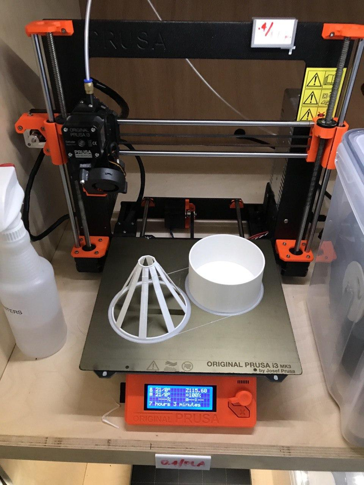
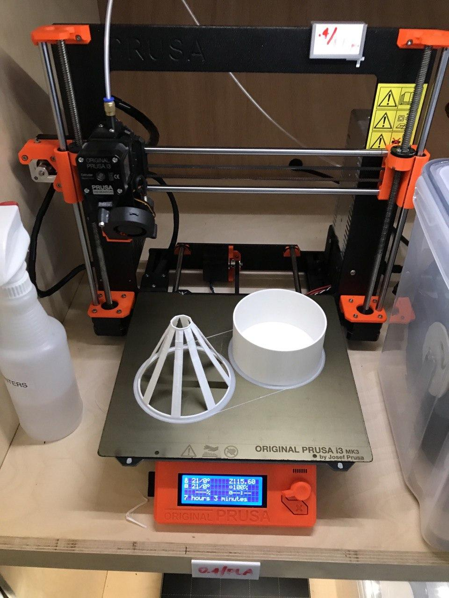

Building an Interactive Lamp: 3D Modelling and Printing
In this and the next lab, you will build an interactive lamp. It consists of a rigid base structure that you will 3D model and later 3D print with one of the Prusa 3D printers at the IDC. Afterwards, you will sew a soft lamp shade from fabric and conductive thread to make the lamp interactive, i.e. control its color and brightness.
Your Task
In today's lab, you will create the base of the interactive lamp by following these steps:
3D model the lamp base using the 3D editor Blender, then export the model as .stl file format
open the .stl in Prusa Slicer, slice the model with the correct print settings, then generate the .gcode file for 3D printing
3D print the .gcode file on one of the IDC's Prusa 3D printers
At the end of lab 5, upload to your student google drive:
the 3D model as saved in Blender (.blend file format)
the slicing file from Prusa Slicer (.prusa file format)
2-3 photos (.jpg or .png) of your 3D printed lamp
Before Starting Lab 5
Make sure you have the 3D editor Blender installed and watched the recommended tutorials about Blender.
You can find the link to the install and tutorial instructions here: Blender tutorials
3D modeling a lamp
As you see in the images above, the lamp consists of two parts:
the base of the lamp (the cylindrical shape that will house the electronics)
the shade of the lamp (the cone shape that will be covered with fabric)
Building the base
We made a video tutorial available that will guide you through the modelling of the lamp base. The video quality might be better if you click on the youtube icon in the lower left corner. This opens a new tab and you can set the quality to 1080p.
Building the lamp shade
The lamp shade will be placed on top of the lamp base. It has holes to let light shine through and it will be the place on which you can mount RGB LEDs. The video quality might be better if you click on the youtube icon in the lower left corner. This opens a new tab and you can set the quality to 1080p.
Adding a recess to the lamp base
The base and the shade of the lamp do not really fit to each other and wouldn't connect tightly when just placed on top of each other. Therefore, add a recess to base of the lamp that has enough space such that the lamp shade fits in it nicely. The video quality might be better if you click on the youtube icon in the lower left corner. This opens a new tab and you can set the quality to 1080p.
Short cuts: 'a' = select all 'e' = extrude 's' = scale 'm' = merge '7' = top view '1' = side view 'G' + 'z' = grab and move in z


 
